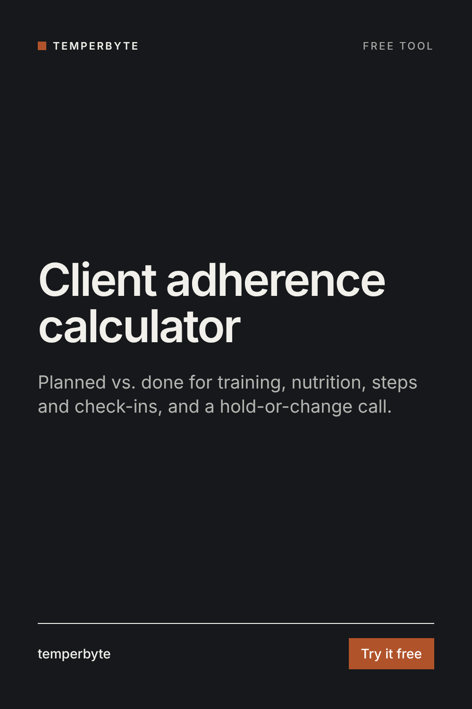

Before you change a client's plan, check how much of the current plan actually happened. Enter what was planned and what was done for the period.
When a client isn't progressing, the first question is not "what should change?" but "how much of the plan happened?". A plan followed half the time hasn't been tested yet. Changing targets or adding volume on top of low adherence usually makes the plan harder to follow, not more effective.
Each area under 75% is flagged on its own too, because a client can hit every meal target and still miss half the sessions.
Each area is done ÷ planned × 100. The overall number is the plain average of the areas you filled in, so leave out what you don't track.
A coaching aid, not medical advice. Dizziness, fainting, guilt around food, skipping meals to make up for eating, or exercising far beyond the plan are reasons to talk with the client and involve a professional, not to adjust a target.
Reviewing check-ins every week? The Check-in Analyzer skill for Claude counts adherence from a pasted check-in, does the weight trend math, makes the hold, adjust or review call with the reason, flags red flags, and writes a ready-to-send reply in your voice.
See Check-in AnalyzerOr try the free lite version, or the free weight trend calculator.
